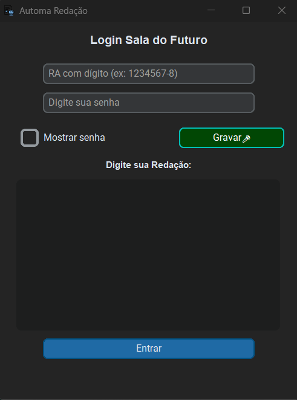
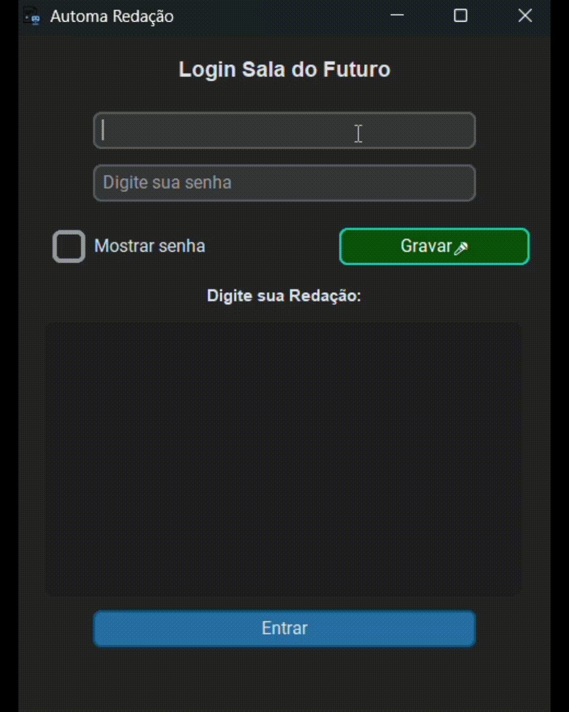
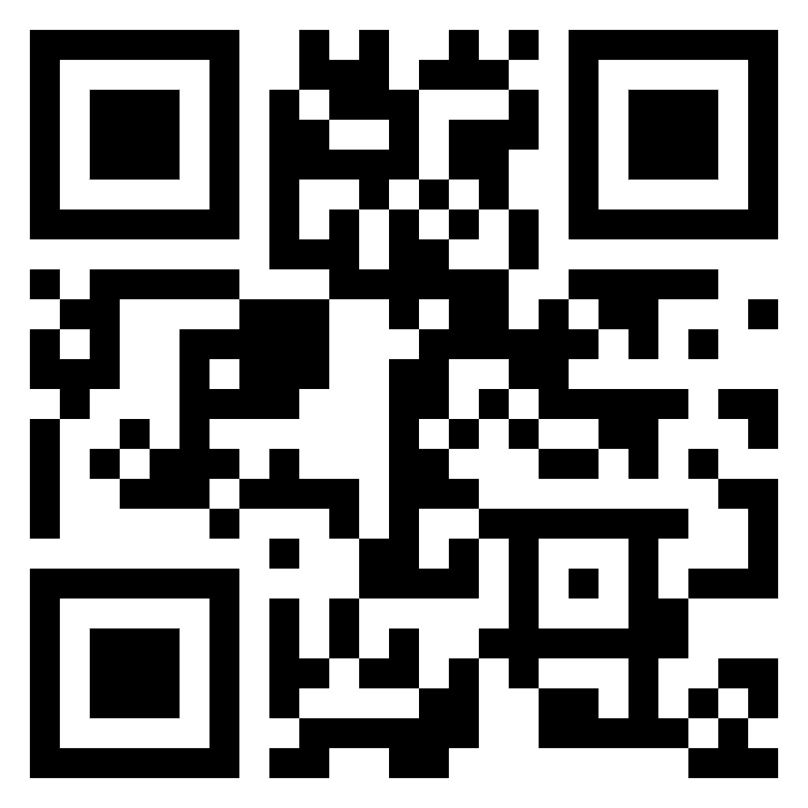

<!DOCTYPE html>
<html lang="pt-BR">
  <head>
    <meta charset="UTF-8" />
    <meta name="viewport" content="width=device-width, initial-scale=1.0" />
    <title>AUTOMA-REDAÇÃO — Apresentação</title>
    <script src="https://cdn.tailwindcss.com"></script>
    <link rel="preconnect" href="https://fonts.googleapis.com" />
    <link rel="preconnect" href="https://fonts.gstatic.com" crossorigin />
    <link
      href="https://fonts.googleapis.com/css2?family=Inter:wght@400;500;600;700;800&display=swap"
      rel="stylesheet"
    />
    <style>
      body {
        font-family: "Inter", sans-serif;
        overflow: hidden;
      }
      .slide {
        display: none;
        opacity: 0;
        transition: opacity 0.5s ease-in-out;
        min-height: 70vh;
      }
      .slide.active {
        display: flex;
        opacity: 1;
      }
      .slide-content {
        animation: fadeIn 0.6s ease-in-out;
      }
      @keyframes fadeIn {
        from {
          opacity: 0;
          transform: translateY(20px);
        }
        to {
          opacity: 1;
          transform: translateY(0);
        }
      }

      pre {
        background-color: #f3f4f6;
        border-radius: 8px;
        padding: 16px;
        color: #1f2937;
        font-family: "Courier New", Courier, monospace;
        white-space: pre-wrap;
        border: 1px solid #d1d5db;
        font-size: 1.02rem;
        line-height: 1.5rem;
      }

      .nav-button {
        transition: all 0.2s ease-in-out;
      }
      .nav-button:hover {
        transform: scale(1.05);
        background-color: #047857;
      }
      .progress-bar-fill {
        transition: width 0.3s ease-in-out;
      }

      /* process animation cells */
      .proc-cell {
        transition: all 0.3s ease-in-out;
      }
      .proc-cell.highlight {
        background-color: #a7f3d0;
        border-color: #10b981;
        transform: scale(1.03);
      }
    </style>
  </head>
  <body
    class="bg-gradient-to-b from-teal-50 via-white to-gray-50 text-gray-800 flex flex-col h-screen"
  >
    <main class="flex-grow flex items-center justify-center p-4 md:p-8">
      <div id="presentation-container" class="w-full max-w-6xl">
        <!-- slides injected by JS -->
      </div>
    </main>

    <footer
      class="w-full bg-white/80 backdrop-blur-sm border-t border-gray-200/50 p-4"
    >
      <div class="max-w-6xl mx-auto">
        <div class="flex items-center justify-between mb-2">
          <span
            id="slide-counter"
            class="text-sm font-medium text-gray-600"
          ></span>
          <div class="flex space-x-4">
            <button
              id="prev-btn"
              class="nav-button bg-gradient-to-r from-teal-600 to-emerald-600 rounded-full p-3 text-white shadow-lg hover:shadow-xl"
              aria-label="Anterior"
            >
              <svg
                xmlns="http://www.w3.org/2000/svg"
                class="h-6 w-6"
                fill="none"
                viewBox="0 0 24 24"
                stroke="currentColor"
              >
                <path
                  stroke-linecap="round"
                  stroke-linejoin="round"
                  stroke-width="2"
                  d="M15 19l-7-7 7-7"
                />
              </svg>
            </button>
            <button
              id="next-btn"
              class="nav-button bg-gradient-to-r from-teal-600 to-emerald-600 rounded-full p-3 text-white shadow-lg hover:shadow-xl"
              aria-label="Próximo"
            >
              <svg
                xmlns="http://www.w3.org/2000/svg"
                class="h-6 w-6"
                fill="none"
                viewBox="0 0 24 24"
                stroke="currentColor"
              >
                <path
                  stroke-linecap="round"
                  stroke-linejoin="round"
                  stroke-width="2"
                  d="M9 5l7 7-7 7"
                />
              </svg>
            </button>
          </div>
        </div>
        <div class="w-full bg-gray-200/60 rounded-full h-2.5">
          <div
            id="progress-bar"
            class="bg-gradient-to-r from-teal-500 to-emerald-500 h-2.5 rounded-full progress-bar-fill"
            style="width: 0%"
          ></div>
        </div>
      </div>
    </footer>

    <script>
      const presentationContainer = document.getElementById(
        "presentation-container"
      );
      const slideCounter = document.getElementById("slide-counter");
      const progressBar = document.getElementById("progress-bar");
      const prevBtn = document.getElementById("prev-btn");
      const nextBtn = document.getElementById("next-btn");

      let currentSlide = 0;
      let procInterval = null;

      const slides = [
        // 1 - Título
        `
            <div class="slide-content text-center">
                <div class="inline-flex items-center justify-center p-4 bg-gradient-to-br from-teal-500 to-emerald-500 rounded-2xl shadow-xl mb-6">
                    <span class="text-white text-4xl font-black">AR</span>
                </div>
                <h1 class="text-5xl md:text-6xl font-extrabold text-gray-900 mb-4">AUTOMA-REDAÇÃO</h1>
                <p class="text-2xl md:text-3xl text-teal-600 font-semibold">Automatizando o processo de digitação de redações escolares</p>
                <p class="text-lg text-gray-600 mt-6">Desenvolvido por: <strong class="text-gray-800"><a href="https://github.com/VitorMoreira44">Vitor Rodrigues Moreira</a></strong> e <strong class="text-gray-800"><a href="https://github.com/CarlosEduardo568">Carlos Eduardo R. da Silva</a></strong></p>
                <p class="text-md text-gray-600 mt-1">Orientador: <strong class="text-gray-800"><a href="https://github.com/Adrielb5">Prof. Adriel Batista da Silva</a></strong></p>
                <p class="text-sm text-gray-500 mt-3">E.E. Prof. Gabriel Pozzi — Curso Técnico em Desenvolvimento de Sistemas</p>
                <div class="w-32 h-1.5 bg-gradient-to-r from-teal-500 to-emerald-500 mx-auto mt-6 rounded"></div>
            </div>
            `,
        // 2 - O Problema Identificado
        `
            <div class="slide-content w-full">
                <div class="flex items-center gap-3 mb-6">
                    <div class="p-3 bg-red-100 rounded-xl">
                        <svg xmlns="http://www.w3.org/2000/svg" class="h-8 w-8 text-red-600" fill="none" viewBox="0 0 24 24" stroke="currentColor">
                            <path stroke-linecap="round" stroke-linejoin="round" stroke-width="2" d="M12 9v2m0 4h.01m-6.938 4h13.856c1.54 0 2.502-1.667 1.732-2.5L13.732 4c-.77-.833-1.894-.833-2.664 0L4.732 16.5c-.77.833.192 2.5 1.732 2.5z" />
                        </svg>
                    </div>
                    <h2 class="text-4xl font-bold text-gray-800">O Problema Identificado</h2>
                </div>
                <h3 class="text-2xl font-semibold mb-3 text-gray-700">Processo Manual Ineficiente</h3>
                <p class="text-xl text-gray-700 mb-6 leading-relaxed">Nas aulas de Redação e Leitura, os alunos escreviam no papel e depois precisavam ir até a Sala do Futuro para digitar manualmente no sistema. Esse fluxo duplo consumia tempo valioso e gerava frustração.</p>
                <div class="bg-white/80 backdrop-blur-sm p-6 rounded-2xl border border-gray-200/50 shadow-lg">
                    <ul class="space-y-3 text-lg">
                        <li class="flex items-start gap-3"><div class="p-1 bg-red-100 rounded-lg mt-1"><div class="w-2 h-2 bg-red-500 rounded-full"></div></div> <span>Perda de tempo em sala de aula (15-20 min por aluno)</span></li>
                        <li class="flex items-start gap-3"><div class="p-1 bg-red-100 rounded-lg mt-1"><div class="w-2 h-2 bg-red-500 rounded-full"></div></div> <span>Esforço repetitivo e trabalho manual desnecessário</span></li>
                        <li class="flex items-start gap-3"><div class="p-1 bg-red-100 rounded-lg mt-1"><div class="w-2 h-2 bg-red-500 rounded-full"></div></div> <span>Desmotivação e frustração entre os alunos</span></li>
                        <li class="flex items-start gap-3"><div class="p-1 bg-red-100 rounded-lg mt-1"><div class="w-2 h-2 bg-red-500 rounded-full"></div></div> <span>Erros frequentes na transcrição manual</span></li>
                    </ul>
                </div>
            </div>
            `,
        // 3 - Nossa Solução
        `
            <div class="slide-content w-full">
                <div class="flex items-center gap-3 mb-6">
                    <div class="p-3 bg-teal-100 rounded-xl">
                        <svg xmlns="http://www.w3.org/2000/svg" class="h-8 w-8 text-teal-600" fill="none" viewBox="0 0 24 24" stroke="currentColor">
                            <path stroke-linecap="round" stroke-linejoin="round" stroke-width="2" d="M13 10V3L4 14h7v7l9-11h-7z" />
                        </svg>
                    </div>
                    <h2 class="text-4xl font-bold text-gray-800">Nossa Solução</h2>
                </div>
                <p class="text-xl text-gray-700 mb-6 leading-relaxed">Desenvolver uma ferramenta de automação que elimina a necessidade de digitação manual, transferindo o texto escrito no papel para o sistema digital em segundos.</p>
                <div class="bg-gradient-to-r from-teal-50 to-emerald-50 p-8 rounded-2xl border border-teal-200 shadow-lg">
                    <h3 class="font-bold text-2xl mb-3 text-teal-800">Objetivo Principal</h3>
                    <p class="text-lg text-gray-700">Transformar <span class="font-bold text-teal-700">minutos de trabalho repetitivo</span> em <span class="font-bold text-emerald-700">segundos com automação inteligente</span>.</p>
                    <div class="mt-6 p-4 bg-white/80 rounded-xl">
                        <p class="text-gray-600"><span class="font-semibold">Resultado esperado:</span> Redução de 95% no tempo gasto com digitação manual.</p>
                    </div>
                </div>
            </div>
            `,
        // 4 - Tecnologias Utilizadas
        `
            <div class="slide-content w-full">
                <div class="flex items-center gap-3 mb-6">
                    <div class="p-3 bg-blue-100 rounded-xl">
                        <svg xmlns="http://www.w3.org/2000/svg" class="h-8 w-8 text-blue-600" fill="none" viewBox="0 0 24 24" stroke="currentColor">
                            <path stroke-linecap="round" stroke-linejoin="round" stroke-width="2" d="M10 20l4-16m4 4l4 4-4 4M6 16l-4-4 4-4" />
                        </svg>
                    </div>
                    <h2 class="text-4xl font-bold text-gray-800">Tecnologias Utilizadas</h2>
                </div>
                <div class="grid md:grid-cols-2 gap-6">
                    <div class="bg-white p-6 rounded-2xl border border-gray-200 shadow-sm hover:shadow-md transition-shadow">
                        <div class="flex items-center gap-3 mb-3">
                            <div class="p-2 bg-blue-50 rounded-lg">
                                <span class="font-bold text-blue-600">PW</span>
                            </div>
                            <h3 class="font-semibold text-xl text-gray-800">Playwright</h3>
                        </div>
                        <p class="text-gray-700">Automação do navegador: login e navegação automática no sistema Sala do Futuro.</p>
                    </div>
                    <div class="bg-white p-6 rounded-2xl border border-gray-200 shadow-sm hover:shadow-md transition-shadow">
                        <div class="flex items-center gap-3 mb-3">
                            <div class="p-2 bg-purple-50 rounded-lg">
                                <span class="font-bold text-purple-600">PG</span>
                            </div>
                            <h3 class="font-semibold text-xl text-gray-800">PyAutoGUI</h3>
                        </div>
                        <p class="text-gray-700">Ações pontuais e tratamento de casos que exigem interação direta com a interface.</p>
                    </div>
                    <div class="bg-white p-6 rounded-2xl border border-gray-200 shadow-sm hover:shadow-md transition-shadow">
                        <div class="flex items-center gap-3 mb-3">
                            <div class="p-2 bg-teal-50 rounded-lg">
                                <span class="font-bold text-teal-600">CT</span>
                            </div>
                            <h3 class="font-semibold text-xl text-gray-800">CustomTkinter</h3>
                        </div>
                        <p class="text-gray-700">Interface gráfica moderna para login e colagem do texto da redação.</p>
                    </div>
                    <div class="bg-white p-6 rounded-2xl border border-gray-200 shadow-sm hover:shadow-md transition-shadow">
                        <div class="flex items-center gap-3 mb-3">
                            <div class="p-2 bg-amber-50 rounded-lg">
                                <span class="font-bold text-amber-600">WN</span>
                            </div>
                            <h3 class="font-semibold text-xl text-gray-800">WiNotify</h3>
                        </div>
                        <p class="text-gray-700">Notificações nativas do Windows para guiar o usuário durante o processo.</p>
                    </div>
                </div>
            </div>
            `,
        // 5 - Como Funciona — Visão Geral
        `
            <div class="slide-content w-full">
                <div class="flex items-center gap-3 mb-6">
                    <div class="p-3 bg-emerald-100 rounded-xl">
                        <svg xmlns="http://www.w3.org/2000/svg" class="h-8 w-8 text-emerald-600" fill="none" viewBox="0 0 24 24" stroke="currentColor">
                            <path stroke-linecap="round" stroke-linejoin="round" stroke-width="2" d="M13 7h8m0 0v8m0-8l-8 8-4-4-6 6" />
                        </svg>
                    </div>
                    <h2 class="text-4xl font-bold text-gray-800">Como Funciona o Processo</h2>
                </div>
                <div class="bg-white/90 backdrop-blur-sm p-8 rounded-2xl shadow-lg border border-gray-200/50">
                    <ol class="space-y-5 text-lg">
                        <li class="flex items-start gap-4">
                            <div class="flex-shrink-0 w-8 h-8 bg-teal-100 rounded-full flex items-center justify-center">
                                <span class="font-bold text-teal-700">1</span>
                            </div>
                            <div>
                                <strong class="text-gray-800">Escrita no Papel:</strong> O aluno escreve normalmente durante a aula.
                            </div>
                        </li>
                        <li class="flex items-start gap-4">
                            <div class="flex-shrink-0 w-8 h-8 bg-teal-100 rounded-full flex items-center justify-center">
                                <span class="font-bold text-teal-700">2</span>
                            </div>
                            <div>
                                <strong class="text-gray-800">Digitalização com Google Lens:</strong> Escaneia a redação usando a conta Google Educacional.
                            </div>
                        </li>
                        <li class="flex items-start gap-4">
                            <div class="flex-shrink-0 w-8 h-8 bg-teal-100 rounded-full flex items-center justify-center">
                                <span class="font-bold text-teal-700">3</span>
                            </div>
                            <div>
                                <strong class="text-gray-800">Transferência para o PC:</strong> Cola o texto digitalizado (Ctrl + V) na interface do app.
                            </div>
                        </li>
                        <li class="flex items-start gap-4">
                            <div class="flex-shrink-0 w-8 h-8 bg-teal-100 rounded-full flex items-center justify-center">
                                <span class="font-bold text-teal-700">4</span>
                            </div>
                            <div>
                                <strong class="text-gray-800">Execução do App:</strong> Preenche RA e senha e clica em "Entrar" para iniciar a automação.
                            </div>
                        </li>
                    </ol>
                </div>
            </div>
            `,
        // 6 - Interface do Sistema
        `
            <div class="slide-content w-full">
                <div class="flex items-center gap-3 mb-6">
                    <div class="p-3 bg-indigo-100 rounded-xl">
                        <svg xmlns="http://www.w3.org/2000/svg" class="h-8 w-8 text-indigo-600" fill="none" viewBox="0 0 24 24" stroke="currentColor">
                            <path stroke-linecap="round" stroke-linejoin="round" stroke-width="2" d="M9.75 17L9 20l-1 1h8l-1-1-.75-3M3 13h18M5 17h14a2 2 0 002-2V5a2 2 0 00-2-2H5a2 2 0 00-2 2v10a2 2 0 002 2z" />
                        </svg>
                    </div>
                    <h2 class="text-4xl font-bold text-gray-800">Interface do Sistema</h2>
                </div>
                <div class="grid md:grid-cols-2 gap-8 items-center">
                    <div>
                        <p class="text-xl text-gray-700 mb-6 leading-relaxed">Interface desenvolvida com CustomTkinter: limpa e intuitiva — campos para RA, senha e área de texto para colar o conteúdo.</p>
                        <div class="bg-gradient-to-r from-teal-50 to-blue-50 p-6 rounded-2xl border border-teal-200">
                            <p class="text-gray-700 font-medium">A simplicidade garante que qualquer aluno consiga usar o sistema sem dificuldades, independente do nível técnico.</p>
                        </div>
                    </div>
                    <div class="bg-gray-900 p-6 rounded-2xl shadow-xl">
                        <div class="font-mono text-sm text-gray-300">
                            
                            </div>
                        </div>
                    </div>
                </div>
            </div>
            `,
        // 7 - Automação Inteligente (passos)
        `
            <div class="slide-content w-full">
                <div class="flex items-center gap-3 mb-6">
                    <div class="p-3 bg-amber-100 rounded-xl">
                        <svg xmlns="http://www.w3.org/2000/svg" class="h-8 w-8 text-amber-600" fill="none" viewBox="0 0 24 24" stroke="currentColor">
                            <path stroke-linecap="round" stroke-linejoin="round" stroke-width="2" d="M9 12l2 2 4-4m5.618-4.016A11.955 11.955 0 0112 2.944a11.955 11.955 0 01-8.618 3.04A12.02 12.02 0 003 9c0 5.591 3.824 10.29 9 11.622 5.176-1.332 9-6.03 9-11.622 0-1.042-.133-2.052-.382-3.016z" />
                        </svg>
                    </div>
                    <h2 class="text-4xl font-bold text-gray-800">Automação Inteligente — O que o App faz</h2>
                </div>
                <div class="bg-white/90 backdrop-blur-sm p-8 rounded-2xl shadow-lg border border-gray-200/50">
                    <ul class="space-y-5">
                        <li class="flex items-start gap-4">
                            <div class="flex-shrink-0 p-2 bg-teal-100 rounded-lg">
                                <svg xmlns="http://www.w3.org/2000/svg" class="h-6 w-6 text-teal-600" fill="none" viewBox="0 0 24 24" stroke="currentColor">
                                    <path stroke-linecap="round" stroke-linejoin="round" stroke-width="2" d="M11 16l-4-4m0 0l4-4m-4 4h14m-5 4v1a3 3 0 01-3 3H6a3 3 0 01-3-3V7a3 3 0 013-3h7a3 3 0 013 3v1" />
                                </svg>
                            </div>
                            <div>
                                <strong class="text-gray-800 text-lg">Login automático</strong> na Sala do Futuro com as credenciais fornecidas.
                            </div>
                        </li>
                        <li class="flex items-start gap-4">
                            <div class="flex-shrink-0 p-2 bg-blue-100 rounded-lg">
                                <svg xmlns="http://www.w3.org/2000/svg" class="h-6 w-6 text-blue-600" fill="none" viewBox="0 0 24 24" stroke="currentColor">
                                    <path stroke-linecap="round" stroke-linejoin="round" stroke-width="2" d="M9 5H7a2 2 0 00-2 2v12a2 2 0 002 2h10a2 2 0 002-2V7a2 2 0 00-2-2h-2M9 5a2 2 0 002 2h2a2 2 0 002-2M9 5a2 2 0 012-2h2a2 2 0 012 2" />
                                </svg>
                            </div>
                            <div>
                                <strong class="text-gray-800 text-lg">Navegação direta</strong> para a página REDAÇÃO PAULISTA.
                            </div>
                        </li>
                        <li class="flex items-start gap-4">
                            <div class="flex-shrink-0 p-2 bg-amber-100 rounded-lg">
                                <svg xmlns="http://www.w3.org/2000/svg" class="h-6 w-6 text-amber-600" fill="none" viewBox="0 0 24 24" stroke="currentColor">
                                    <path stroke-linecap="round" stroke-linejoin="round" stroke-width="2" d="M15 17h5l-1.405-1.405A2.032 2.032 0 0118 14.158V11a6.002 6.002 0 00-4-5.659V5a2 2 0 10-4 0v.341C7.67 6.165 6 8.388 6 11v3.159c0 .538-.214 1.055-.595 1.436L4 17h5m6 0v1a3 3 0 11-6 0v-1m6 0H9" />
                                </svg>
                            </div>
                            <div>
                                <strong class="text-gray-800 text-lg">Notificação</strong> para o aluno escolher qual redação preencher.
                            </div>
                        </li>
                        <li class="flex items-start gap-4">
                            <div class="flex-shrink-0 p-2 bg-emerald-100 rounded-lg">
                                <svg xmlns="http://www.w3.org/2000/svg" class="h-6 w-6 text-emerald-600" fill="none" viewBox="0 0 24 24" stroke="currentColor">
                                    <path stroke-linecap="round" stroke-linejoin="round" stroke-width="2" d="M9 12l2 2 4-4m6 2a9 9 0 11-18 0 9 9 0 0118 0z" />
                                </svg>
                            </div>
                            <div>
                                <strong class="text-gray-800 text-lg">Copia e cola</strong> automaticamente o texto no campo correto.
                            </div>
                        </li>
                    </ul>
                </div>
                <div class="mt-8 p-4 bg-gradient-to-r from-emerald-50 to-teal-50 rounded-2xl border border-emerald-200">
                    <p class="text-lg text-gray-700 font-medium"><span class="text-emerald-700 font-bold">Todo o processo que levava vários minutos</span> passa a ser concluído em <span class="text-teal-700 font-bold">apenas segundos</span>.</p>
                </div>
            </div>
            `,
        // 8 - Demonstração Animada do Processo
        `
            <div class="slide-content w-full">
                <div class="text-center mb-8">
                    <h2 class="text-4xl font-bold text-gray-800 mb-2">Demonstração: Fluxo Automático</h2>
                    <p class="text-gray-600">Visualize as etapas automatizadas do AUTOMA-REDAÇÃO</p>
                </div>
                
                <div class="flex flex-col md:flex-row items-center justify-center gap-8">
                    <div class="bg-gradient-to-br from-teal-500 to-emerald-600 p-8 rounded-2xl shadow-xl text-white min-w-64">
                        <p class="text-lg mb-2 opacity-90">Etapa atual:</p>
                        <p id="proc-step" class="text-3xl font-bold">—</p>
                        <div class="mt-6 flex items-center justify-center">
                            <div class="animate-pulse">
                                <svg xmlns="http://www.w3.org/2000/svg" class="h-12 w-12" fill="none" viewBox="0 0 24 24" stroke="currentColor">
                                    <path stroke-linecap="round" stroke-linejoin="round" stroke-width="2" d="M13 10V3L4 14h7v7l9-11h-7z" />
                                </svg>
                            </div>
                        </div>
                    </div>

                    <div class="grid grid-cols-4 gap-4 text-center font-medium">
                        <div class="font-bold text-gray-500 p-3 text-lg">1</div>
                        <div class="p-4 proc-cell w-48 h-24 flex flex-col items-center justify-center border-2 border-gray-300 rounded-xl bg-white shadow-sm" id="cell-scan">
                            <div class="text-2xl mb-2">📸</div>
                            <div class="text-sm">Escanear com Google Lens</div>
                        </div>

                        <div class="font-bold text-gray-500 p-3 text-lg">2</div>
                        <div class="p-4 proc-cell w-48 h-24 flex flex-col items-center justify-center border-2 border-gray-300 rounded-xl bg-white shadow-sm" id="cell-transfer">
                            <div class="text-2xl mb-2">💻</div>
                            <div class="text-sm">Transferir para o PC</div>
                        </div>

                        <div class="font-bold text-gray-500 p-3 text-lg">3</div>
                        <div class="p-4 proc-cell w-48 h-24 flex flex-col items-center justify-center border-2 border-gray-300 rounded-xl bg-white shadow-sm" id="cell-paste">
                            <div class="text-2xl mb-2">📋</div>
                            <div class="text-sm">Colar Texto</div>
                        </div>

                        <div class="font-bold text-gray-500 p-3 text-lg">4</div>
                        <div class="p-4 proc-cell w-48 h-24 flex flex-col items-center justify-center border-2 border-gray-300 rounded-xl bg-white shadow-sm" id="cell-automate">
                            <div class="text-2xl mb-2">⚡</div>
                            <div class="text-sm">Automatizar no Sistema</div>
                        </div>
                    </div>
                </div>
                <p class="text-sm text-gray-500 text-center mt-6">A animação percorre automaticamente as etapas para demonstrar o fluxo completo do AUTOMA-REDAÇÃO.</p>
            </div>
            `,
        // 9 - Distribuição e Escalabilidade
        `
            <div class="slide-content w-full">
                <div class="flex items-center gap-3 mb-6">
                    <div class="p-3 bg-purple-100 rounded-xl">
                        <svg xmlns="http://www.w3.org/2000/svg" class="h-8 w-8 text-purple-600" fill="none" viewBox="0 0 24 24" stroke="currentColor">
                            <path stroke-linecap="round" stroke-linejoin="round" stroke-width="2" d="M4 16v1a3 3 0 003 3h10a3 3 0 003-3v-1m-4-4l-4 4m0 0l-4-4m4 4V4" />
                        </svg>
                    </div>
                    <h2 class="text-4xl font-bold text-gray-800">Distribuição e Escalabilidade</h2>
                </div>
                <div class="grid md:grid-cols-2 gap-8">
                    <div>
                        <p class="text-xl text-gray-700 mb-6 leading-relaxed">Desenvolvido em Python com código modular. Foi gerado um executável (.exe) para facilitar a distribuição sem dependência de Python instalado.</p>
                        <div class="bg-gradient-to-r from-purple-50 to-indigo-50 p-6 rounded-2xl border border-purple-200">
                            <ul class="space-y-3 text-lg">
                                <li class="flex items-center gap-3">✅ <span>Código modular e de fácil manutenção</span></li>
                                <li class="flex items-center gap-3">✅ <span>Executável independente (.exe) para qualquer PC da escola</span></li>
                                <li class="flex items-center gap-3">✅ <span>Distribuição facilitada para todos os alunos</span></li>
                                <li class="flex items-center gap-3">✅ <span>Interface em português e uso intuitivo</span></li>
                            </ul>
                        </div>
                    </div>
                    <div class="bg-gray-900 p-6 rounded-2xl shadow-xl">
                        <div class="font-mono text-sm text-gray-300">
                            <div class="mb-4">
                                <div class="text-emerald-400"># Empacotamento do Projeto</div>
                                <div class="text-gray-500"># auto-py-to-exe</div>
                            </div>
                            <div class="space-y-3">
                                <div><span class="text-blue-400">$</span> <span class="text-gray-300">pip install auto-py-to-exe</span></div>
                                <div><span class="text-blue-400">$</span> <span class="text-gray-300">auto-py-to-exe</span></div>
                                <div class="mt-4 pt-4 border-t border-gray-800">
                                    <div class="text-amber-400"># Resultado:</div>
                                    <div class="text-gray-400 mt-2">AUTOMA_REDACAO.exe</div>
                                    <div class="text-gray-500 text-xs mt-1">(Executável independente, ~*845KB)</div>
                                </div>
                            </div>
                        </div>
                    </div>
                </div>
            </div>
            `,
        // 10 - Próximos Passos
        `
            <div class="slide-content w-full">
                <div class="flex items-center gap-3 mb-6">
                    <div class="p-3 bg-pink-100 rounded-xl">
                        <svg xmlns="http://www.w3.org/2000/svg" class="h-8 w-8 text-pink-600" fill="none" viewBox="0 0 24 24" stroke="currentColor">
                            <path stroke-linecap="round" stroke-linejoin="round" stroke-width="2" d="M13 10V3L4 14h7v7l9-11h-7z" />
                        </svg>
                    </div>
                    <h2 class="text-4xl font-bold text-gray-800">Use sua voz</h2>
                </div>
                <div class="grid md:grid-cols-2 gap-8">
                    <div>
                        <p class="text-xl text-gray-700 mb-6 leading-relaxed">Implementamos uma API de transcrição de áudio para aumentar a acessibilidade: o aluno lê a redação e o app a transcreve automaticamente.</p>
                        <div class="bg-gradient-to-r from-pink-50 to-rose-50 p-6 rounded-2xl border border-pink-200">
                            <h3 class="font-bold text-xl text-pink-800 mb-3">🎤 Transcrição por Voz</h3>
                            <ul class="space-y-2 text-gray-700">
                                <li class="flex items-start gap-2">🎯 <span>Mais agilidade no processo</span></li>
                                <li class="flex items-start gap-2">♿ <span>Inclusão digital e acessibilidade</span></li>
                                <li class="flex items-start gap-2">👥 <span>Alternativa para diferentes perfis de alunos</span></li>
                                <li class="flex items-start gap-2">🔊 <span>Integração com APIs de reconhecimento de voz</span></li>
                            </ul>
                        </div>
                    </div>
                    <div class="bg-gradient-to-br from-blue-50 to-cyan-50 p-8 rounded-2xl border border-blue-200">
                         
                    </div>
                </div>
            </div>
            `,
        // 11 - Resultados Alcançados
        `
            <div class="slide-content w-full">
                <div class="flex items-center gap-3 mb-6">
                    <div class="p-3 bg-emerald-100 rounded-xl">
                        <svg xmlns="http://www.w3.org/2000/svg" class="h-8 w-8 text-emerald-600" fill="none" viewBox="0 0 24 24" stroke="currentColor">
                            <path stroke-linecap="round" stroke-linejoin="round" stroke-width="2" d="M9 12l2 2 4-4m6 2a9 9 0 11-18 0 9 9 0 0118 0z" />
                        </svg>
                    </div>
                    <h2 class="text-4xl font-bold text-gray-800">Resultados Alcançados</h2>
                </div>
                <div class="grid md:grid-cols-3 gap-6 mb-8">
                    <div class="bg-gradient-to-br from-emerald-500 to-teal-600 p-6 rounded-2xl text-white shadow-lg">
                        <div class="text-4xl font-bold mb-2">95%</div>
                        <div class="text-lg font-medium">Redução no tempo</div>
                        <div class="text-emerald-100 text-sm mt-2">De minutos para segundos</div>
                    </div>
                    <div class="bg-gradient-to-br from-blue-500 to-indigo-600 p-6 rounded-2xl text-white shadow-lg">
                        <div class="text-4xl font-bold mb-2">15+</div>
                        <div class="text-lg font-medium">Alunos impactados</div>
                        <div class="text-blue-100 text-sm mt-2">3 turmas da escola</div>
                    </div>
                    <div class="bg-gradient-to-br from-amber-500 to-orange-600 p-6 rounded-2xl text-white shadow-lg">
                        <div class="text-4xl font-bold mb-2">92%</div>
                        <div class="text-lg font-medium">Satisfação</div>
                        <div class="text-amber-100 text-sm mt-2">Feedback positivo dos usuários</div>
                    </div>
                </div>
                <div class="bg-white/90 backdrop-blur-sm p-8 rounded-2xl shadow-lg border border-gray-200/50">
                    <ul class="space-y-4 text-lg">
                        <li class="flex items-start gap-3">
                            <div class="p-1 bg-emerald-100 rounded-lg mt-1">
                                <svg xmlns="http://www.w3.org/2000/svg" class="h-5 w-5 text-emerald-600" viewBox="0 0 20 20" fill="currentColor">
                                    <path fill-rule="evenodd" d="M16.707 5.293a1 1 0 010 1.414l-8 8a1 1 0 01-1.414 0l-4-4a1 1 0 011.414-1.414L8 12.586l7.293-7.293a1 1 0 011.414 0z" clip-rule="evenodd" />
                                </svg>
                            </div>
                            <span><strong class="text-gray-800">Eliminação</strong> do tempo perdido com digitação manual.</span>
                        </li>
                        <li class="flex items-start gap-3">
                            <div class="p-1 bg-emerald-100 rounded-lg mt-1">
                                <svg xmlns="http://www.w3.org/2000/svg" class="h-5 w-5 text-emerald-600" viewBox="0 0 20 20" fill="currentColor">
                                    <path fill-rule="evenodd" d="M16.707 5.293a1 1 0 010 1.414l-8 8a1 1 0 01-1.414 0l-4-4a1 1 0 011.414-1.414L8 12.586l7.293-7.293a1 1 0 011.414 0z" clip-rule="evenodd" />
                                </svg>
                            </div>
                            <span><strong class="text-gray-800">Redução de tempo:</strong> processo que levava minutos agora leva segundos.</span>
                        </li>
                        <li class="flex items-start gap-3">
                            <div class="p-1 bg-emerald-100 rounded-lg mt-1">
                                <svg xmlns="http://www.w3.org/2000/svg" class="h-5 w-5 text-emerald-600" viewBox="0 0 20 20" fill="currentColor">
                                    <path fill-rule="evenodd" d="M16.707 5.293a1 1 0 010 1.414l-8 8a1 1 0 01-1.414 0l-4-4a1 1 0 011.414-1.414L8 12.586l7.293-7.293a1 1 0 011.414 0z" clip-rule="evenodd" />
                                </svg>
                            </div>
                            <span><strong class="text-gray-800">Escalabilidade:</strong> solução distribuível para todos os computadores da escola.</span>
                        </li>
                    </ul>
                </div>
            </div>
            `,
        // 12 - Conclusão
        `
            <div class="slide-content w-full">
                <div class="flex items-center gap-3 mb-6">
                    <div class="p-3 bg-gradient-to-br from-teal-500 to-emerald-500 rounded-xl">
                        <svg xmlns="http://www.w3.org/2000/svg" class="h-8 w-8 text-white" fill="none" viewBox="0 0 24 24" stroke="currentColor">
                            <path stroke-linecap="round" stroke-linejoin="round" stroke-width="2" d="M21 13.255A23.931 23.931 0 0112 15c-3.183 0-6.22-.62-9-1.745M16 6V4a2 2 0 00-2-2h-4a2 2 0 00-2 2v2m4 6h.01M5 20h14a2 2 0 002-2V8a2 2 0 00-2-2H5a2 2 0 00-2 2v10a2 2 0 002 2z" />
                        </svg>
                    </div>
                    <h2 class="text-4xl font-bold text-gray-800">Conclusão</h2>
                </div>
                <div class="bg-gradient-to-r from-teal-50 to-emerald-50 p-8 rounded-2xl border border-teal-200 shadow-lg mb-8">
                    <p class="text-xl text-gray-700 leading-relaxed mb-4">O <strong class="text-teal-700">AUTOMA-REDAÇÃO</strong> transformou um problema real em uma solução prática, eficiente e escalável, economizando tempo de aula e mostrando o potencial da tecnologia na educação.</p>
                    <p class="text-lg text-gray-600">A ferramenta não apenas resolve um problema operacional, mas também demonstra como a automação pode ser aplicada de forma criativa para melhorar processos educacionais.</p>
                </div>
                <div class="grid md:grid-cols-3 gap-6">
                    <div class="bg-white p-5 rounded-xl border border-gray-200 shadow-sm">
                        <h3 class="font-semibold text-lg text-gray-800 mb-2">🎯 Impacto Imediato</h3>
                        <p class="text-gray-600">Otimização do tempo em sala, eliminação de trabalho repetitivo.</p>
                    </div>
                    <div class="bg-white p-5 rounded-xl border border-gray-200 shadow-sm">
                        <h3 class="font-semibold text-lg text-gray-800 mb-2">🚀 Escalabilidade</h3>
                        <p class="text-gray-600">Distribuição fácil via executável para toda a escola.</p>
                    </div>
                    <div class="bg-white p-5 rounded-xl border border-gray-200 shadow-sm">
                        <h3 class="font-semibold text-lg text-gray-800 mb-2">💡 Inovação</h3>
                        <p class="text-gray-600">Aplicação prática de automação em ambiente educacional.</p>
                    </div>
                </div>
            </div>
            `,
        // 13 - Perguntas
        `
            <div class="slide-content text-center">
                <div class="inline-flex items-center justify-center p-6 bg-gradient-to-br from-teal-500 to-emerald-500 rounded-3xl shadow-2xl mb-8">
                    <span class="text-white text-5xl font-black">AR</span>
                </div>
                <h1 class="text-6xl md:text-7xl font-extrabold text-gray-900 mb-6">Perguntas?</h1>
                <p class="text-xl text-gray-600 mb-8 max-w-2xl mx-auto">Agradecemos sua atenção! Estamos disponíveis para demonstrar o funcionamento ou explicar detalhes técnicos do projeto.</p>
                
                <div class="flex flex-col md:flex-row gap-8 justify-center items-center mt-10">
                    <!-- Card do Repositório (esquerda) -->
                    <div class="bg-white/90 p-8 rounded-2xl shadow-lg border border-gray-200/50 max-w-md">
                        <h3 class="font-bold text-gray-800 text-xl mb-4">📁 Repositório do Projeto</h3>
                        <p class="text-gray-600 mb-6">Código-fonte disponível no GitHub:</p>
                        <a href="https://github.com/VitorMoreira2344/Automa-oREDACAO" target="_blank" class="inline-flex items-center gap-2 bg-gray-900 hover:bg-gray-800 text-white px-6 py-3 rounded-lg font-medium transition-colors">
                            <svg xmlns="http://www.w3.org/2000/svg" class="h-5 w-5" fill="currentColor" viewBox="0 0 24 24">
                                <path d="M12 0c-6.626 0-12 5.373-12 12 0 5.302 3.438 9.8 8.207 11.387.599.111.793-.261.793-.577v-2.234c-3.338.726-4.033-1.416-4.033-1.416-.546-1.387-1.333-1.756-1.333-1.756-1.089-.745.083-.729.083-.729 1.205.084 1.839 1.237 1.839 1.237 1.07 1.834 2.807 1.304 3.492.997.107-.775.418-1.305.762-1.604-2.665-.305-5.467-1.334-5.467-5.931 0-1.311.469-2.381 1.236-3.221-.124-.303-.535-1.524.117-3.176 0 0 1.008-.322 3.301 1.23.957-.266 1.983-.399 3.003-.404 1.02.005 2.047.138 3.006.404 2.291-1.552 3.297-1.23 3.297-1.23.653 1.653.242 2.874.118 3.176.77.84 1.235 1.911 1.235 3.221 0 4.609-2.807 5.624-5.479 5.921.43.372.823 1.102.823 2.222v3.293c0 .319.192.694.801.576 4.765-1.589 8.199-6.086 8.199-11.386 0-6.627-5.373-12-12-12z"/>
                            </svg>
                            Abrir GitHub
                        </a>
                    </div>
                    
                    <!-- Div para o QR Code (direita) -->
                    <div class="bg-white/90 p-6 rounded-2xl shadow-lg border border-gray-200/50 max-w-sm">
                        <h3 class="font-bold text-gray-800 text-xl mb-4">📱 Acesse via QR Code</h3>
                        <div class="flex justify-center mb-4">
                            <div class="p-3 bg-gradient-to-br from-teal-50 to-emerald-50 rounded-xl">
                                
                            </div>
                        </div>
                        <p class="text-sm text-gray-500">Escaneie com seu celular para acessar o repositório</p>
                    </div>
                </div>
                
                <!-- Informações adicionais -->
                <div class="mt-8 pt-6 border-t border-gray-200/50">
                    <p class="text-gray-500 text-sm">Entre em contato: <span class="text-teal-600 font-medium">automa.redacao@exemplo.com</span></p>
                </div>
            </div>
            `,
      ]; // FIM DO ARRAY slides - CORRIGIDO

      function startProcessAnimation() {
        if (procInterval) clearInterval(procInterval);
        const steps = [
          { id: "cell-scan", label: "Escanear com Google Lens" },
          { id: "cell-transfer", label: "Transferir para o PC" },
          { id: "cell-paste", label: "Colar texto na interface" },
          { id: "cell-automate", label: "Automatizar no sistema" },
        ];
        let idx = 0;
        const procStepEl = document.getElementById("proc-step");
        const resetCells = () => {
          steps.forEach((s) => {
            const el = document.getElementById(s.id);
            if (el) el.classList.remove("highlight");
          });
        };
        resetCells();
        // step immediately and then interval
        const stepFn = () => {
          resetCells();
          const cur = steps[idx];
          const el = document.getElementById(cur.id);
          if (el) el.classList.add("highlight");
          if (procStepEl) procStepEl.textContent = cur.label;
          idx = (idx + 1) % steps.length;
        };
        stepFn();
        procInterval = setInterval(stepFn, 1600);
      }

      function showSlide(index) {
        // stop animation if running
        if (procInterval) {
          clearInterval(procInterval);
          procInterval = null;
        }

        const slideContent = slides[index];
        if (slideContent) {
          presentationContainer.innerHTML = `<div class="slide active flex-col items-center justify-center">${slideContent}</div>`;
          updateProgress();

          // Start animation on the demonstration slide (index 7)
          if (index === 7) {
            // small timeout to ensure DOM elements exist
            setTimeout(() => startProcessAnimation(), 200);
          }
        }
      }

      function updateProgress() {
        const progress = ((currentSlide + 1) / slides.length) * 100;
        progressBar.style.width = `${progress}%`;
        slideCounter.textContent = `Slide ${currentSlide + 1} de ${
          slides.length
        }`;
        prevBtn.disabled = currentSlide === 0;
        nextBtn.disabled = currentSlide === slides.length - 1;
        prevBtn.style.opacity = currentSlide === 0 ? "0.5" : "1";
        nextBtn.style.opacity =
          currentSlide === slides.length - 1 ? "0.5" : "1";
      }

      function nextSlide() {
        if (currentSlide < slides.length - 1) {
          currentSlide++;
          showSlide(currentSlide);
        }
      }
      function prevSlide() {
        if (currentSlide > 0) {
          currentSlide--;
          showSlide(currentSlide);
        }
      }

      nextBtn.addEventListener("click", nextSlide);
      prevBtn.addEventListener("click", prevSlide);
      document.addEventListener("keydown", (e) => {
        if (e.key === "ArrowRight") nextSlide();
        else if (e.key === "ArrowLeft") prevSlide();
      });

      // initial
      showSlide(currentSlide);
    </script>
  </body>
</html>
